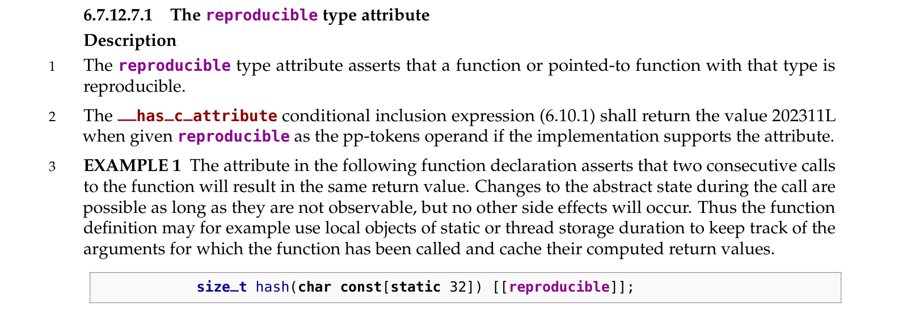
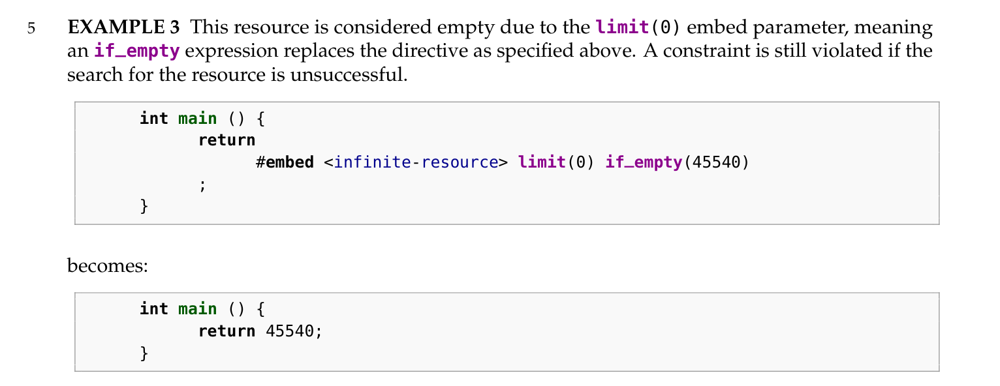

C23 标准手册拾遗（三）
Comment注意到 enum 可以有 underlying type
1 | enum no_underlying { |
此时 a 一定是 2，没有 underlying type 的枚举值默认是 int。而 b 是实现定义的：enum 的 underlying type 只要能容纳其枚举值即可。
1 | enum underlying : unsigned char { |
保证一定是 1。
注意到 restrict qualifier
像是一种优化提示，告诉编译器我这些指针指向的内容在函数运行期间不会被其他的任何途径访问到。
场景：数组在函数当中不会被访问
Restriction：只能从作用域内向外访问。
例外是作为返回值：
详见 6.7.3.1。大半夜读读剩下来几个例子我有点 注意力涣散
注意力涣散 函数声明
我以前还真的没有想过，对数组名取地址到底有什么效果。（其实就是普通的取地址）
It’s pointer to
int[3]，i.e.int (*)[3]
scanf 似乎接受 char s[] 字符串的地址 &s，以及字符串的指针 s。它们只是值相同而类型不同。前者会给出类型不匹配的 warning。
注意到 这个可以用来作 C 语言课程的教学内容
还是在想，是不是 C 语言课程应该首先科普 “指针” 的概念？然后再教别的。在这之前，首先要介绍 “内存” 是怎么工作的。。。
第一节课，应该是数据：类型和数组——的机器和 C 语言表示，以及少量 io。所有东西都简化到内存中去，不考虑寄存器。
initializer 也会有踩踏。
注意到 standard attributes
这看起来很能函数式。还有 [[unsequenced]]。明天来写个详细的。
是不是以后算
fib都不用记忆化存储的？
–答案是不能。看似这个 attr 只能优化掉编译期可以推导出的参数，而不是动态地 cache 相同参数的结果。testcase：
1 | /* foo.c */ |
如果没有 [[reproducible]] 声明，在编译单元 bar.c 中不知道 foo 是纯函数，为了保留副作用，会进行两次调用。声明之后，有两次 foo(0) 纯函数调用，会被合并为一次。
0124 = 84 = 42 + 42。
如果 foo 的调用参数里有运行期变量的话，就一次也无法优化。具体的例子是：
1 | for (int i = 0; i < 10; i++) foo(i); |
这样会调用 20 次而不是推导出两个循环里有相同参数的调用。
要观察到这个现象不能放在一个文件里。否则常量折叠会直接干碎所有调用。另外注意添加 -O2/-O3 优化，毕竟 attr 是为了优化而生的。
检查编译器是否支持：
1 | static_assert(__has_c_attribute(reproducible) == 202311L); // 写在代码任意位置 |
注意到 C23 支持了 #embed，编译期嵌入二进制文件。
哈哈，数学公式爆了
使用例：
这个编译期嵌入随机数的例子还挺有意思的：
limit 参数将影响 if_empty 的判断。
注意力涣散 感觉很复杂的 __VA_OPT__ 但是一时不知道该怎么用
看了第二个例子感觉有点懂了。如果 ... 存在的话，就把 __VA_OPT__ 的参数放进去。没有的话就不放。
这不是构造函数吗（？）
1 |
|
最后一个例子换一下，中间就会多一个空格。说明每一个 __VA_OPT__ 都会产生一个单独的 pp-tokens 而不是连成一个。
注意力集中 ## == # ## # != ##
注意到 assert() 将会被 NDEBUG 宏 disable
有这样的一个 pragma：
可以让用户保证类型安全的情况下用这些公式进行计算。
复变反三角函数是一个多值函数。因而要 cut 它的一个解析分支出来
cacos 剪掉了实轴上 [-1, +1] 以外所有的定义域，只保留主值。 （表达可能不精准，我没咋学过复变）
其他三角函数也类似。
注意到 <math.h> 中的函数保证不会抛出 SIGFPE